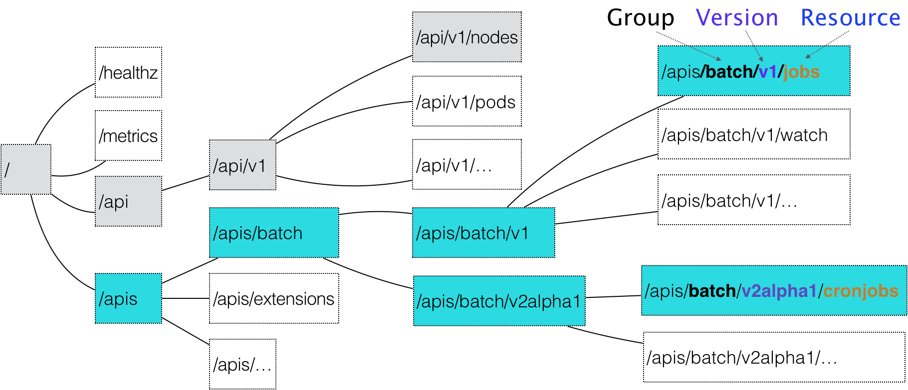
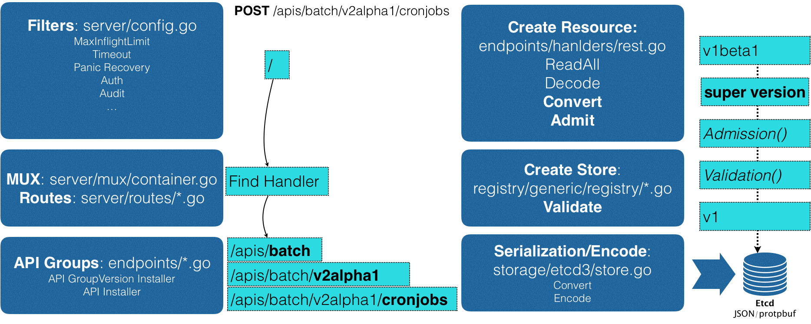

- 00 开篇词 打通“容器技术”的任督二脉.md.html
- 01 预习篇 · 小鲸鱼大事记（一）：初出茅庐.md.html
- 02 预习篇 · 小鲸鱼大事记（二）：崭露头角.md.html
- 03 预习篇 · 小鲸鱼大事记（三）：群雄并起.md.html
- 04 预习篇 · 小鲸鱼大事记（四）：尘埃落定.md.html
- 05 白话容器基础（一）：从进程说开去.md.html
- 06 白话容器基础（二）：隔离与限制.md.html
- 07 白话容器基础（三）：深入理解容器镜像.md.html
- 08 白话容器基础（四）：重新认识Docker容器.md.html
- 09 从容器到容器云：谈谈Kubernetes的本质.md.html
- 10 Kubernetes一键部署利器：kubeadm.md.html
- 11 从0到1：搭建一个完整的Kubernetes集群.md.html
- 12 牛刀小试：我的第一个容器化应用.md.html
- 13 为什么我们需要Pod？.md.html
- 14 深入解析Pod对象（一）：基本概念.md.html
- 15 深入解析Pod对象（二）：使用进阶.md.html
- 16 编排其实很简单：谈谈“控制器”模型.md.html
- 17 经典PaaS的记忆：作业副本与水平扩展.md.html
- 18 深入理解StatefulSet（一）：拓扑状态.md.html
- 19 深入理解StatefulSet（二）：存储状态.md.html
- 20 深入理解StatefulSet（三）：有状态应用实践.md.html
- 21 容器化守护进程的意义：DaemonSet.md.html
- 22 撬动离线业务：Job与CronJob.md.html
- 23 声明式API与Kubernetes编程范式.md.html
- 24 深入解析声明式API（一）：API对象的奥秘.md.html
- 25 深入解析声明式API（二）：编写自定义控制器.md.html
- 26 基于角色的权限控制：RBAC.md.html
- 27 聪明的微创新：Operator工作原理解读.md.html
- 28 PV、PVC、StorageClass，这些到底在说啥？.md.html
- 29 PV、PVC体系是不是多此一举？从本地持久化卷谈起.md.html
- 30 编写自己的存储插件：FlexVolume与CSI.md.html
- 31 容器存储实践：CSI插件编写指南.md.html
- 32 浅谈容器网络.md.html
- 33 深入解析容器跨主机网络.md.html
- 34 Kubernetes网络模型与CNI网络插件.md.html
- 35 解读Kubernetes三层网络方案.md.html
- 36 为什么说Kubernetes只有soft multi-tenancy？.md.html
- 37 找到容器不容易：Service、DNS与服务发现.md.html
- 38 从外界连通Service与Service调试“三板斧”.md.html
- 39 谈谈Service与Ingress.md.html
- 40 Kubernetes的资源模型与资源管理.md.html
- 41 十字路口上的Kubernetes默认调度器.md.html
- 42 Kubernetes默认调度器调度策略解析.md.html
- 43 Kubernetes默认调度器的优先级与抢占机制.md.html
- 44 Kubernetes GPU管理与Device Plugin机制.md.html
- 45 幕后英雄：SIG-Node与CRI.md.html
- 46 解读 CRI 与 容器运行时.md.html
- 47 绝不仅仅是安全：Kata Containers 与 gVisor.md.html
- 48 Prometheus、Metrics Server与Kubernetes监控体系.md.html
- 49 Custom Metrics_ 让Auto Scaling不再“食之无味”.md.html
- 50 让日志无处可逃：容器日志收集与管理.md.html
- 51 谈谈Kubernetes开源社区和未来走向.md.html
- 52 答疑：在问题中解决问题，在思考中产生思考.md.html
- 特别放送 2019 年，容器技术生态会发生些什么？.md.html
- 特别放送 基于 Kubernetes 的云原生应用管理，到底应该怎么做？.md.html
- 结束语 Kubernetes：赢开发者赢天下.md.html
- 捐赠
24 深入解析声明式API（一）：API对象的奥秘
你好，我是张磊。今天我和你分享的主题是：深入解析声明式API之API对象的奥秘。
在上一篇文章中，我为你详细讲解了Kubernetes声明式API的设计、特点，以及使用方式。
而在今天这篇文章中，我就来为你讲解一下Kubernetes声明式API的工作原理，以及如何利用这套API机制，在Kubernetes里添加自定义的API对象。
你可能一直就很好奇：当我把一个YAML文件提交给Kubernetes之后，它究竟是如何创建出一个API对象的呢？
这得从声明式API的设计谈起了。
在Kubernetes项目中，一个API对象在Etcd里的完整资源路径，是由：Group（API组）、Version（API版本）和Resource（API资源类型）三个部分组成的。
通过这样的结构，整个Kubernetes里的所有API对象，实际上就可以用如下的树形结构表示出来：
- 在这幅图中，你可以很清楚地看到Kubernetes里API对象的组织方式，其实是层层递进的。
比如，现在我要声明要创建一个CronJob对象，那么我的YAML文件的开始部分会这么写：
apiVersion: batch/v2alpha1
kind: CronJob
...
在这个YAML文件中，“CronJob”就是这个API对象的资源类型（Resource），“batch”就是它的组（Group），v2alpha1就是它的版本（Version）。
当我们提交了这个YAML文件之后，Kubernetes就会把这个YAML文件里描述的内容，转换成Kubernetes里的一个CronJob对象。
那么，Kubernetes是如何对Resource、Group和Version进行解析，从而在Kubernetes项目里找到CronJob对象的定义呢？
首先，Kubernetes会匹配API对象的组。
需要明确的是，对于Kubernetes里的核心API对象，比如：Pod、Node等，是不需要Group的（即：它们的Group是“”）。所以，对于这些API对象来说，Kubernetes会直接在/api这个层级进行下一步的匹配过程。
而对于CronJob等非核心API对象来说，Kubernetes就必须在/apis这个层级里查找它对应的Group，进而根据“batch”这个Group的名字，找到/apis/batch。
不难发现，这些API Group的分类是以对象功能为依据的，比如Job和CronJob就都属于“batch” （离线业务）这个Group。
然后，Kubernetes会进一步匹配到API对象的版本号。
对于CronJob这个API对象来说，Kubernetes在batch这个Group下，匹配到的版本号就是v2alpha1。
在Kubernetes中，同一种API对象可以有多个版本，这正是Kubernetes进行API版本化管理的重要手段。这样，比如在CronJob的开发过程中，对于会影响到用户的变更就可以通过升级新版本来处理，从而保证了向后兼容。
最后，Kubernetes会匹配API对象的资源类型。
在前面匹配到正确的版本之后，Kubernetes就知道，我要创建的原来是一个/apis/batch/v2alpha1下的CronJob对象。
这时候，APIServer就可以继续创建这个CronJob对象了。为了方便理解，我为你总结了一个如下所示流程图来阐述这个创建过程：
- 首先，当我们发起了创建CronJob的POST请求之后，我们编写的YAML的信息就被提交给了APIServer。
而APIServer的第一个功能，就是过滤这个请求，并完成一些前置性的工作，比如授权、超时处理、审计等。
然后，请求会进入MUX和Routes流程。如果你编写过Web Server的话就会知道，MUX和Routes是APIServer完成URL和Handler绑定的场所。而APIServer的Handler要做的事情，就是按照我刚刚介绍的匹配过程，找到对应的CronJob类型定义。
接着，APIServer最重要的职责就来了：根据这个CronJob类型定义，使用用户提交的YAML文件里的字段，创建一个CronJob对象。
而在这个过程中，APIServer会进行一个Convert工作，即：把用户提交的YAML文件，转换成一个叫作Super Version的对象，它正是该API资源类型所有版本的字段全集。这样用户提交的不同版本的YAML文件，就都可以用这个Super Version对象来进行处理了。
接下来，APIServer会先后进行Admission()和Validation()操作。比如，我在上一篇文章中提到的Admission Controller和Initializer，就都属于Admission的内容。
而Validation，则负责验证这个对象里的各个字段是否合法。这个被验证过的API对象，都保存在了APIServer里一个叫作Registry的数据结构中。也就是说，只要一个API对象的定义能在Registry里查到，它就是一个有效的Kubernetes API对象。
最后，APIServer会把验证过的API对象转换成用户最初提交的版本，进行序列化操作，并调用Etcd的API把它保存起来。
由此可见，声明式API对于Kubernetes来说非常重要。所以，APIServer这样一个在其他项目里“平淡无奇”的组件，却成了Kubernetes项目的重中之重。它不仅是Google Borg设计思想的集中体现，也是Kubernetes项目里唯一一个被Google公司和RedHat公司双重控制、其他势力根本无法参与其中的组件。
此外，由于同时要兼顾性能、API完备性、版本化、向后兼容等很多工程化指标，所以Kubernetes团队在APIServer项目里大量使用了Go语言的代码生成功能，来自动化诸如Convert、DeepCopy等与API资源相关的操作。这部分自动生成的代码，曾一度占到Kubernetes项目总代码的20%~30%。
这也是为何，在过去很长一段时间里，在这样一个极其“复杂”的APIServer中，添加一个Kubernetes风格的API资源类型，是一个非常困难的工作。
不过，在Kubernetes v1.7 之后，这个工作就变得轻松得多了。这，当然得益于一个全新的API插件机制：CRD。
CRD的全称是Custom Resource Definition。顾名思义，它指的就是，允许用户在Kubernetes中添加一个跟Pod、Node类似的、新的API资源类型，即：自定义API资源。
举个例子，我现在要为Kubernetes添加一个名叫Network的API资源类型。
它的作用是，一旦用户创建一个Network对象，那么Kubernetes就应该使用这个对象定义的网络参数，调用真实的网络插件，比如Neutron项目，为用户创建一个真正的“网络”。这样，将来用户创建的Pod，就可以声明使用这个“网络”了。
这个Network对象的YAML文件，名叫example-network.yaml，它的内容如下所示：
apiVersion: samplecrd.k8s.io/v1
kind: Network
metadata:
name: example-network
spec:
cidr: "192.168.0.0/16"
gateway: "192.168.0.1"
可以看到，我想要描述“网络”的API资源类型是Network；API组是samplecrd.k8s.io；API 版本是v1。
那么，Kubernetes又该如何知道这个API（samplecrd.k8s.io/v1/network）的存在呢？
其实，上面的这个YAML文件，就是一个具体的“自定义API资源”实例，也叫CR（Custom Resource）。而为了能够让Kubernetes认识这个CR，你就需要让Kubernetes明白这个CR的宏观定义是什么，也就是CRD（Custom Resource Definition）。
这就好比，你想让计算机认识各种兔子的照片，就得先让计算机明白，兔子的普遍定义是什么。比如，兔子“是哺乳动物”“有长耳朵，三瓣嘴”。
所以，接下来，我就先编写一个CRD的YAML文件，它的名字叫作network.yaml，内容如下所示：
apiVersion: apiextensions.k8s.io/v1beta1
kind: CustomResourceDefinition
metadata:
name: networks.samplecrd.k8s.io
spec:
group: samplecrd.k8s.io
version: v1
names:
kind: Network
plural: networks
scope: Namespaced
可以看到，在这个CRD中，我指定了“group: samplecrd.k8s.io”“version: v1”这样的API信息，也指定了这个CR的资源类型叫作Network，复数（plural）是networks。
然后，我还声明了它的scope是Namespaced，即：我们定义的这个Network是一个属于Namespace的对象，类似于Pod。
这就是一个Network API资源类型的API部分的宏观定义了。这就等同于告诉了计算机：“兔子是哺乳动物”。所以这时候，Kubernetes就能够认识和处理所有声明了API类型是“samplecrd.k8s.io/v1/network”的YAML文件了。
接下来，我还需要让Kubernetes“认识”这种YAML文件里描述的“网络”部分，比如“cidr”（网段），“gateway”（网关）这些字段的含义。这就相当于我要告诉计算机：“兔子有长耳朵和三瓣嘴”。
这时候呢，我就需要稍微做些代码工作了。
首先，我要在GOPATH下，创建一个结构如下的项目：
备注：在这里，我并不要求你具有完备的Go语言知识体系，但我会假设你已经了解了Golang的一些基本知识（比如，知道什么是GOPATH）。而如果你还不了解的话，可以在涉及到相关内容时，再去查阅一些相关资料。
$ tree $GOPATH/src/github.com/<your-name>/k8s-controller-custom-resource
.
├── controller.go
├── crd
│ └── network.yaml
├── example
│ └── example-network.yaml
├── main.go
└── pkg
└── apis
└── samplecrd
├── register.go
└── v1
├── doc.go
├── register.go
└── types.go
其中，pkg/apis/samplecrd就是API组的名字，v1是版本，而v1下面的types.go文件里，则定义了Network对象的完整描述。我已经把这个项目上传到了GitHub上，你可以随时参考。
然后，我在pkg/apis/samplecrd目录下创建了一个register.go文件，用来放置后面要用到的全局变量。这个文件的内容如下所示：
package samplecrd
const (
GroupName = "samplecrd.k8s.io"
Version = "v1"
)
接着，我需要在pkg/apis/samplecrd目录下添加一个doc.go文件（Golang的文档源文件）。这个文件里的内容如下所示：
// +k8s:deepcopy-gen=package
// +groupName=samplecrd.k8s.io
package v1
在这个文件中，你会看到+
其中，+k8s:deepcopy-gen=package意思是，请为整个v1包里的所有类型定义自动生成DeepCopy方法；而+groupName=samplecrd.k8s.io，则定义了这个包对应的API组的名字。
可以看到，这些定义在doc.go文件的注释，起到的是全局的代码生成控制的作用，所以也被称为Global Tags。
接下来，我需要添加types.go文件。顾名思义，它的作用就是定义一个Network类型到底有哪些字段（比如，spec字段里的内容）。这个文件的主要内容如下所示：
package v1
...
// +genclient
// +genclient:noStatus
// +k8s:deepcopy-gen:interfaces=k8s.io/apimachinery/pkg/runtime.Object
// Network describes a Network resource
type Network struct {
// TypeMeta is the metadata for the resource, like kind and apiversion
metav1.TypeMeta `json:",inline"`
// ObjectMeta contains the metadata for the particular object, including
// things like...
// - name
// - namespace
// - self link
// - labels
// - ... etc ...
metav1.ObjectMeta `json:"metadata,omitempty"`
Spec networkspec `json:"spec"`
}
// networkspec is the spec for a Network resource
type networkspec struct {
Cidr string `json:"cidr"`
Gateway string `json:"gateway"`
}
// +k8s:deepcopy-gen:interfaces=k8s.io/apimachinery/pkg/runtime.Object
// NetworkList is a list of Network resources
type NetworkList struct {
metav1.TypeMeta `json:",inline"`
metav1.ListMeta `json:"metadata"`
Items []Network `json:"items"`
}
在上面这部分代码里，你可以看到Network类型定义方法跟标准的Kubernetes对象一样，都包括了TypeMeta（API元数据）和ObjectMeta（对象元数据）字段。
而其中的Spec字段，就是需要我们自己定义的部分。所以，在networkspec里，我定义了Cidr和Gateway两个字段。其中，每个字段最后面的部分比如json:"cidr"，指的就是这个字段被转换成JSON格式之后的名字，也就是YAML文件里的字段名字。
如果你不熟悉这个用法的话，可以查阅一下Golang的文档。
此外，除了定义Network类型，你还需要定义一个NetworkList类型，用来描述一组Network对象应该包括哪些字段。之所以需要这样一个类型，是因为在Kubernetes中，获取所有X对象的List()方法，返回值都是List类型，而不是X类型的数组。这是不一样的。
同样地，在Network和NetworkList类型上，也有代码生成注释。
其中，+genclient的意思是：请为下面这个API资源类型生成对应的Client代码（这个Client，我马上会讲到）。而+genclient:noStatus的意思是：这个API资源类型定义里，没有Status字段。否则，生成的Client就会自动带上UpdateStatus方法。
如果你的类型定义包括了Status字段的话，就不需要这句+genclient:noStatus注释了。比如下面这个例子：
// +genclient
// Network is a specification for a Network resource
type Network struct {
metav1.TypeMeta `json:",inline"`
metav1.ObjectMeta `json:"metadata,omitempty"`
Spec NetworkSpec `json:"spec"`
Status NetworkStatus `json:"status"`
}
需要注意的是，+genclient只需要写在Network类型上，而不用写在NetworkList上。因为NetworkList只是一个返回值类型，Network才是“主类型”。
而由于我在Global Tags里已经定义了为所有类型生成DeepCopy方法，所以这里就不需要再显式地加上+k8s:deepcopy-gen=true了。当然，这也就意味着你可以用+k8s:deepcopy-gen=false来阻止为某些类型生成DeepCopy。
你可能已经注意到，在这两个类型上面还有一句+k8s:deepcopy-gen:interfaces=k8s.io/apimachinery/pkg/runtime.Object的注释。它的意思是，请在生成DeepCopy的时候，实现Kubernetes提供的runtime.Object接口。否则，在某些版本的Kubernetes里，你的这个类型定义会出现编译错误。这是一个固定的操作，记住即可。
不过，你或许会有这样的顾虑：这些代码生成注释这么灵活，我该怎么掌握呢？
其实，上面我所讲述的内容，已经足以应对99%的场景了。当然，如果你对代码生成感兴趣的话，我推荐你阅读这篇博客，它详细地介绍了Kubernetes的代码生成语法。
最后，我需要再编写一个pkg/apis/samplecrd/v1/register.go文件。
在前面对APIServer工作原理的讲解中，我已经提到，“registry”的作用就是注册一个类型（Type）给APIServer。其中，Network资源类型在服务器端注册的工作，APIServer会自动帮我们完成。但与之对应的，我们还需要让客户端也能“知道”Network资源类型的定义。这就需要我们在项目里添加一个register.go文件。它最主要的功能，就是定义了如下所示的addKnownTypes()方法：
package v1
...
// addKnownTypes adds our types to the API scheme by registering
// Network and NetworkList
func addKnownTypes(scheme *runtime.Scheme) error {
scheme.AddKnownTypes(
SchemeGroupVersion,
&Network{},
&NetworkList{},
)
// register the type in the scheme
metav1.AddToGroupVersion(scheme, SchemeGroupVersion)
return nil
}
有了这个方法，Kubernetes就能够在后面生成客户端的时候，“知道”Network以及NetworkList类型的定义了。
像上面这种register.go文件里的内容其实是非常固定的，你以后可以直接使用我提供的这部分代码做模板，然后把其中的资源类型、GroupName和Version替换成你自己的定义即可。
这样，Network对象的定义工作就全部完成了。可以看到，它其实定义了两部分内容：
- 第一部分是，自定义资源类型的API描述，包括：组（Group）、版本（Version）、资源类型（Resource）等。这相当于告诉了计算机：兔子是哺乳动物。
- 第二部分是，自定义资源类型的对象描述，包括：Spec、Status等。这相当于告诉了计算机：兔子有长耳朵和三瓣嘴。
接下来，我就要使用Kubernetes提供的代码生成工具，为上面定义的Network资源类型自动生成clientset、informer和lister。其中，clientset就是操作Network对象所需要使用的客户端，而informer和lister这两个包的主要功能，我会在下一篇文章中重点讲解。
这个代码生成工具名叫k8s.io/code-generator，使用方法如下所示：
# 代码生成的工作目录，也就是我们的项目路径
$ ROOT_PACKAGE="github.com/resouer/k8s-controller-custom-resource"
# API Group
$ CUSTOM_RESOURCE_NAME="samplecrd"
# API Version
$ CUSTOM_RESOURCE_VERSION="v1"
# 安装k8s.io/code-generator
$ go get -u k8s.io/code-generator/...
$ cd $GOPATH/src/k8s.io/code-generator
# 执行代码自动生成，其中pkg/client是生成目标目录，pkg/apis是类型定义目录
$ ./generate-groups.sh all "$ROOT_PACKAGE/pkg/client" "$ROOT_PACKAGE/pkg/apis" "$CUSTOM_RESOURCE_NAME:$CUSTOM_RESOURCE_VERSION"
代码生成工作完成之后，我们再查看一下这个项目的目录结构：
$ tree
.
├── controller.go
├── crd
│ └── network.yaml
├── example
│ └── example-network.yaml
├── main.go
└── pkg
├── apis
│ └── samplecrd
│ ├── constants.go
│ └── v1
│ ├── doc.go
│ ├── register.go
│ ├── types.go
│ └── zz_generated.deepcopy.go
└── client
├── clientset
├── informers
└── listers
其中，pkg/apis/samplecrd/v1下面的zz_generated.deepcopy.go文件，就是自动生成的DeepCopy代码文件。
而整个client目录，以及下面的三个包（clientset、informers、 listers），都是Kubernetes为Network类型生成的客户端库，这些库会在后面编写自定义控制器的时候用到。
可以看到，到目前为止的这些工作，其实并不要求你写多少代码，主要考验的是“复制、粘贴、替换”这样的“基本功”。
而有了这些内容，现在你就可以在Kubernetes集群里创建一个Network类型的API对象了。我们不妨一起来试验下。
首先，使用network.yaml文件，在Kubernetes中创建Network对象的CRD（Custom Resource Definition）：
$ kubectl apply -f crd/network.yaml
customresourcedefinition.apiextensions.k8s.io/networks.samplecrd.k8s.io created
这个操作，就告诉了Kubernetes，我现在要添加一个自定义的API对象。而这个对象的API信息，正是network.yaml里定义的内容。我们可以通过kubectl get命令，查看这个CRD：
$ kubectl get crd
NAME CREATED AT
networks.samplecrd.k8s.io 2018-09-15T10:57:12Z
然后，我们就可以创建一个Network对象了，这里用到的是example-network.yaml：
$ kubectl apply -f example/example-network.yaml
network.samplecrd.k8s.io/example-network created
通过这个操作，你就在Kubernetes集群里创建了一个Network对象。它的API资源路径是samplecrd.k8s.io/v1/networks。
这时候，你就可以通过kubectl get命令，查看到新创建的Network对象：
$ kubectl get network
NAME AGE
example-network 8s
你还可以通过kubectl describe命令，看到这个Network对象的细节：
$ kubectl describe network example-network
Name: example-network
Namespace: default
Labels: <none>
...API Version: samplecrd.k8s.io/v1
Kind: Network
Metadata:
...
Generation: 1
Resource Version: 468239
...
Spec:
Cidr: 192.168.0.0/16
Gateway: 192.168.0.1
当然 ，你也可以编写更多的YAML文件来创建更多的Network对象，这和创建Pod、Deployment的操作，没有任何区别。
总结
在今天这篇文章中，我为你详细解析了Kubernetes声明式API的工作原理，讲解了如何遵循声明式API的设计，为Kubernetes添加一个名叫Network的API资源类型。从而达到了通过标准的kubectl create和get操作，来管理自定义API对象的目的。
不过，创建出这样一个自定义API对象，我们只是完成了Kubernetes声明式API的一半工作。
接下来的另一半工作是：为这个API对象编写一个自定义控制器（Custom Controller）。这样， Kubernetes才能根据Network API对象的“增、删、改”操作，在真实环境中做出相应的响应。比如，“创建、删除、修改”真正的Neutron网络。
而这，正是Network这个API对象所关注的“业务逻辑”。
这个业务逻辑的实现过程，以及它所使用的Kubernetes API编程库的工作原理，就是我要在下一篇文章中讲解的主要内容。
思考题
在了解了CRD的定义方法之后，你是否已经在考虑使用CRD（或者已经使用了CRD）来描述现实中的某种实体了呢？能否分享一下你的思路？（举个例子：某技术团队使用CRD描述了“宿主机”，然后用Kubernetes部署了Kubernetes）
感谢你的收听，欢迎你给我留言，也欢迎分享给更多的朋友一起阅读。
© 2019 - 2023 Liangliang Lee. Powered by gin and hexo-theme-book.